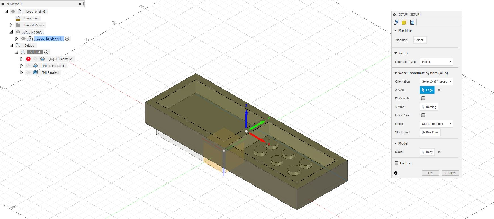
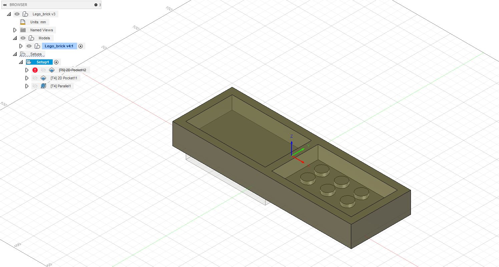
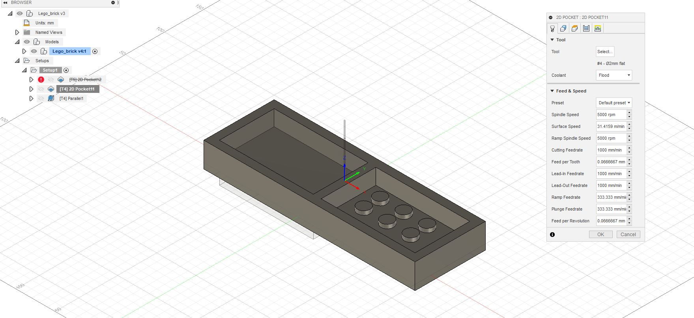
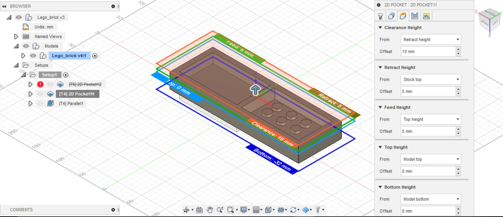
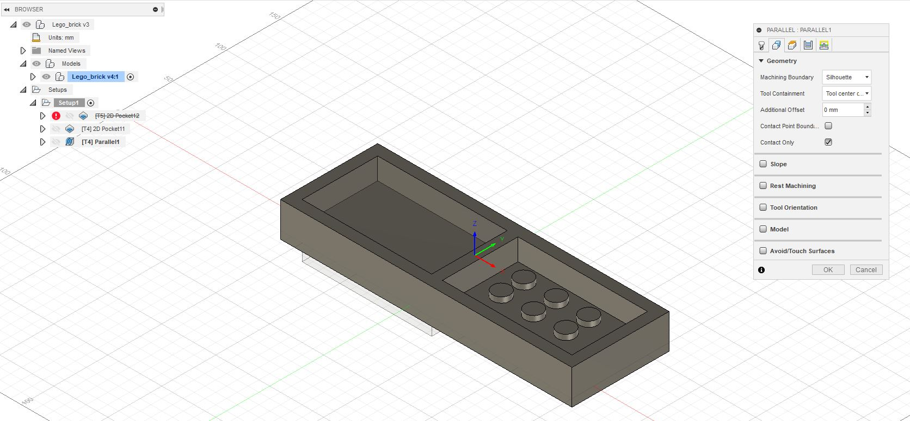
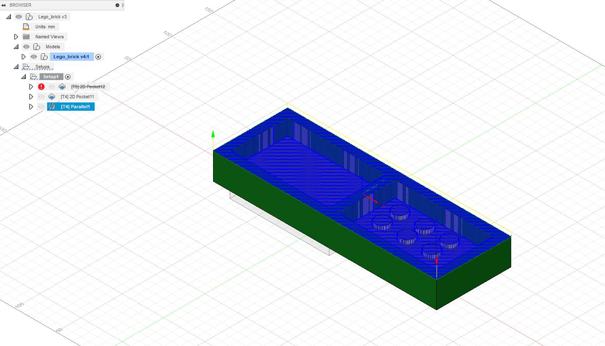

space
- Fusion 360: link.
THE GROUP
The group consists of myself, Stefán Jónsson, my great friend Jóel Ingason and my colleague, Ísak Ernir Sveinbjörnsson.
THE OBJECTIVE OF OUR LABOR
The objective of this group project was to design and simulate the milling of a mold. Let us begin.
My contribution to the project was preparing the toolpaths and making the simulation for the mold. I prepared the toolpaths for the 3D model in collaboration with Jóel Ingason
PREPARATION
My experience with Fusion 360 enabled me to just launch the software and begin sketching.
SOFTWARE AND TOOLS
Fusion 360
Fusion 360 is a cloud-based CAD/CAM tool for collaborative product development.
THE DESIGN
Another member of the group,Ísak Ernir Sveinbjörnsson, designed the 3D model. You can find the procedure on his website.
We started off with making the initial setup. The orientation of the model was defined, selecting the proper operation type (milling) and picking the axis of the 3D model. The initial setup can be seen on the image below.
We then proceded to set to mode in the stock section to "Relative size box" and the stock offset mode to "No additional stock".

The result being:
Then we had to define the roughing toolpath. The first toolpath to be defined is the roughing toolpath that carves out a rough representation of the model. We used a stock 2mm diameter tip and left the Feed and Speed settings at default values.
We then defined the geometry that represents the model. This took a lot of trial and error to get right since it is very important to only select the faces of the object you wish to cut out and the order of the selection is the order in which it is cut out.

The top and bottom heights are then defined as the model top and bottom.
Fusion 360 then calculated the toolpaths for us.

Now we had to make the finishing toolpaths. After the roughing toolpaths were done we proceded to make the finishing toolpaths. we decided to go with the "Paralell" finishing.
The tolerance was defined as 0.1mm and we added perpendicular Passes in order to get some parts that were not being milled properly.

The top and bottom heights are then defined as the model top and bottom.
Here you can see the resulting paths of the finishing toolpath.
To simulate the toolpaths we right clicked the "setup1" tab and choose "simulate" the resulting video of the simulation is here:
The Fusion 360 file can be found here. Github link to model
DESIGNING THE 3D MODEL
Another member of the group, Ísak Ernir, made the 3D model of the LEGO brick. A link explaining the procedure can be found here.